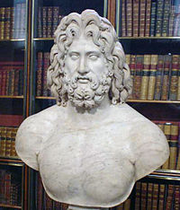

Zeusz
Zeusz (ógörögül: Zεύς, görögül: Δίας) olümposzi legfőbb isten, az „emberek és istenek atyja” a görög mitológiában,
az ég és a villámok ura. Gyakran nevezik „Zeusz Kronionnak”, vagy „Kronidésznek”: mindkettő azt jelenti: Kronosz fia.
Zeusz alapvetően a viharok és a villámok ura. Hatalmasabb az összes többi istennél, más nevén ő a főisten, ám nem mindenható.
Őt is be lehet csapni, továbbá a sors fonói, a Moirák is erősebbek nála. Zeusz állt az ókori görög panteon élén a görög
mitológia több istenének és hősének az apja. A nevéhez társított címek kihangsúlyozzák tevékenysége különböző aspektusait:
- Olümpiosz: ez a cím emeli ki Zeusz királyságát az istenek és az olümpiai pánhellén ünnepségek fölötte.
- Panhelléniosz („minden hellének Zeusza”) egy ezzel rokon cím. Neki épült Aiakosz híres aeginai temploma.
- Xeniosz: a vendégek és vendégszeretet istene, aki megbosszulja, ha valaki rosszul bánik a vendégekkel.
- Horkiosz: az eskük őre. A leleplezett hazudozóknak egy szobrot kellett állítaniuk Zeusznak, rendszerint az olümpiai szentélynél.
- Agoraiosz: az agora, azaz piactér felügyelője, a nem becsületes kereskedők megbüntetője.
- Labrandeosz: (ógörögül: Ζεὺς Λάβρανδος) Labranda város védnöke
Kedvelt állata a sas, fája a tölgy. Akaratát az Épeiroszban található dodonai jósda papjai közvetítették; a tölgyfalombok
susogásából olvasták ki a jövendőt. Az olümpiai templomában elhelyezett, Pheidiasz által készített szobra az ókori világ hét csodájának
egyike.Pajzsa az aigisz (aegis; égisz), melyet Amaltheia kecske bőréből készített ez az állat adott neki tejet csecsemőkorában.
Zeusz ezért halála után a csillagok közé emelte (innen a Bak csillagkép) és szarvából készítette a bőségszarut, melyből étel-ital soha ki nem fogy.
